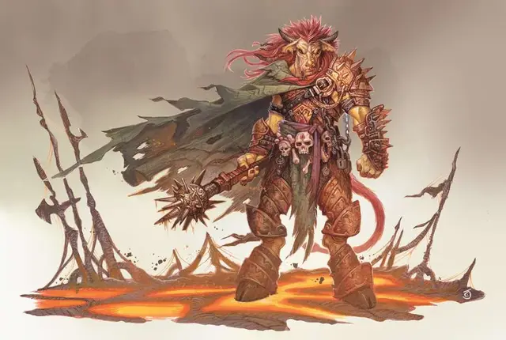

Баэль
Bael
Большое Исчадие (Дьявол), законно-злое

Класс Доспеха 18 (латы)
Хиты 189 (18к10 + 90)
Скорость 30 футов
| мод | спас | ||
|---|---|---|---|
| СИЛ | 24 | +7 | +7 |
| ЛОВ | 17 | +3 | +9 |
| ТЕЛ | 20 | +5 | +11 |
| мод | спас | ||
|---|---|---|---|
| ИНТ | 21 | +5 | +11 |
| МДР | 24 | +7 | +7 |
| ХАР | 24 | +7 | +13 |
Навыки Восприятие +13, Запугивание +13, Убеждение +13
Сопротивление урону холод; дробящий, колющий, рубящий от немагических атак, кроме нанесённых посеребрённым оружием
Иммунитет к урону огонь, яд
Иммунитет к состояниям отравление, очарование, испуг, истощение
Чувства истинное зрение 120 футов, пассивное Восприятие 23
Языки Все, Телепатия 120 фт.
Опасность 19 (22000 опыта)
Бонус мастерства +6
Особенности
Устрашение. Баэль может бонусным действием стать более устрашающим до конца своего следующего хода. Каждое существо, кроме дьяволов, начинающее свой ход в пределах 10 футов от Баэля, должно успешно пройти спасбросок Мудрости Сл 22, иначе существо получит состояние испуганный до начала своего следующего хода.
Врождённое колдовство. Базовой характеристикой Баэля является Харизма (Сл спасброска от заклинания 21, +13 к попаданию атаками заклинаниями). Он может накладывать следующие заклинания, не нуждаясь в материальных компонентах:
• Неограниченно: смена обличья [alter self] (может стать среднего размера при смене своего облика), восставший труп [animate dead], очарование личности [charm person], обнаружение магии [detect magic], нанесение ран [inflict wounds] (в качестве заклинания 8 уровня), невидимость [invisibility] (только на себя), образ [major image]
• 3/день каждое: контрзаклинание [counterspell], рассеивание магии [dispel magic], полёт [fly], внушение [suggestion], огненная стена [wall of fire]
• 1/день каждое: подчинение чудовища [dominate monster], знак [symbol] (только эффект “ошеломление”)
Легендарное сопротивление (3/день). Если Баэль проваливает спасбросок, он может вместо этого сделать спасбросок успешным.
Магическое оружие. Атаки оружием Баэля являются магическими.
Сопротивление магии. Баэль совершает с преимуществом спасброски от заклинаний и прочих магических эффектов.
Регенерация. Баэль восстанавливает 20 хитов в начале своего хода. Если он получает урон холодом или излучением, эта особенность не действует в начале следующего хода Баэля. Баэль умирает только если начинает свой ход с 0 хитов и не может регенерировать.
Действия
Мультиатака. Баэль совершает две рукопашные атаки.
Адский моргенштерн. Рукопашная атака оружием: +13 к попаданию, досягаемость 20 футов, одна цель. Попадание: 16 (2к8 + 7) колющего урона плюс 13 (3к8) урона некротической энергией.
Инфернальный приказ. Каждый союзник Баэля, находящийся на расстоянии 60 футов от него, не может быть очарован или испуган до конца следующего хода Баэля.
Телепортация. Баэль магическим образом телепортируется вместе со всем несомым и носимым снаряжением, на расстояние до 120 футов в свободное пространство, которое он видит.
Легендарные действия
Баэль может совершить 3 легендарных действия, выбирая из представленных ниже вариантов. За один раз можно использовать только одно легендарное действие, и только в конце хода другого существа. Баэль восстанавливает использованные легендарные действия в начале своего хода.
Атака моргенштерном (стоит 2 действия). Баэль совершает атаку своим адским моргенштерном.
Пробудившаяся алчность. Баэль накладывает заклинания очарование личности [charm person] и образ [major image].
Инфернальный приказ. Баэль использует своё действие Инфернальный приказ.
Телепортация. Баэль использует своё действие Телепортация.
Описание
С бушующей целую вечность Войной Крови, которой нет конца, немало возможностей предстало перед амбициозными архидьяволами, чтобы добиться известности, славы и силы в продолжающейся борьбе против демонов. Герцог Баэль, один из самых важных слуг Маммона, прославился и добился признания за свои заслуги. Порученный вести за собой шестьдесят шесть подразделений шипастых дьяволов, Баэль доказал свою тактическую одарённость, заработав уважение как к себе, так и к своему хозяину, одерживая победу за победой над хозяевами Бездны. Маммон полагается на Баэля из-за его боевой смекалки защищать владения своего хозяина. Маммона ещё до сих пор не свергли во время своего правления, тогда как многие архидьяволы уже давно потеряли свои позиции, что и является доказательством навыков Баэля на поле боя.
За свои достижения, так же, как и за свой оттенок кожи, Баэля прозвали Бронзовым Генералом. Невзирая на похвалы, у Баэля были сложные времена в управлении пучиной инфернальных политиков. Многие его критиковали и называли наивным, но никогда не говорили этого ему с глазу на глаз. Основным интересом Баэля всегда было ведение солдат в бой, и поэтому его раздражает, что его стремлению взойти выше по рангу всегда препятствуют хитрые политические конкуренты.
Баэль предпочитает делать слуг из своих противников и смертных, которые присягнули ему на службу, чтобы заслужить своё жалкое место, что пали жертвой превосходных хитросплетений Баэля. Баэль с удовольствием щадит тех, кого он поразил, но только если они продадут свою душу и будут служить ему. Впрочем, он готов совратить почти любого, кто встанет у него на пути, а демонов, над которыми он берёт вверх, убивает не щадя.
Баэль также рад смертным, что хотят служить ему, если конечно, они смогут обеспечить ему преимущество в своей политической игре. Он вербует смекалистых индивидов и полагается на них в качестве представителей своих интересов во дворе Маммона, благодаря чему, Баэль может свободно утолить свою боевую жажду.
Невзирая на свой малый интерес к делам вне боя, или, скорее всего, из-за этого, Баэля почитают меньше всего. Те, кто поклоняется его алтарю, зовут его Королём Преисподней [King of Hell], а самые заблудшие из них, верят, что он является лордом всех дьяволов. В магическом обществе и некоторых письменах, например, в ужасающей Книге Огня [Book of Fire], говорится, что Баэль открыл всему миру заклинание невидимость, хоть и некоторые исследователи магии категорически опровергают такие утверждения. Баэля иногда изображают: жабой, котом, человеком мужского пола, или даже некой смесью из этих созданий, тем не мене, ни одно из этих изображений не отражает его истинную внешность.